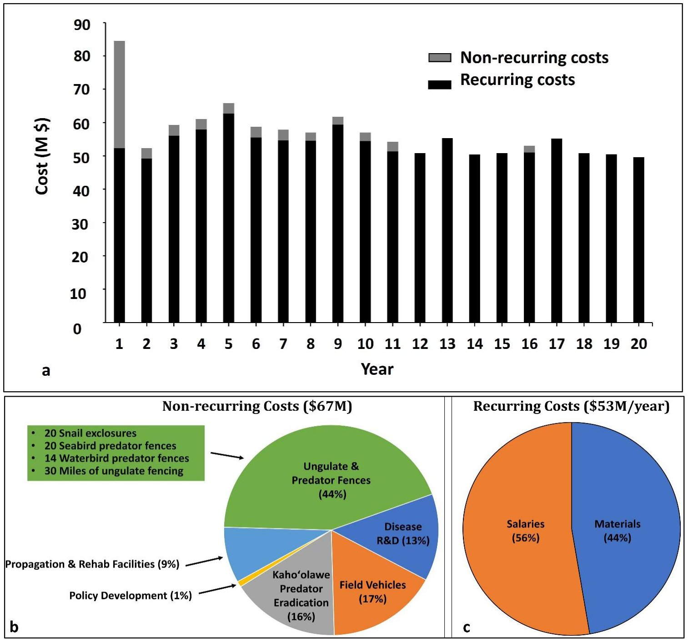

How the actions were prioritized
The Action Prioritization Team, led by UH Mānoa, used a modified Priority Threat Management (PTM) process. PTM is a structured way to compare the costs, feasibility, and benefits of management strategies and find the most cost-effective ways to raise species' chances of persistence.plan p.13, lines 783-788; p.122 lines 4858-4863
DOFAW and UH Mānoa convened collaborative workshops from August 2022 to March 2023. In them, roughly 100 land managers and scientists from research institutions, federal and state agencies, and non-profit organizations contributed professional judgment through open-ended discussions.plan p.13, lines 787-792; p.A2-4 lines 5387-5391 Experts drew on their field experience and on published literature, species status assessments, recovery strategies, action plans, and management plans.plan p.13, lines 793-796
Together, the experts:
- Identified 374 species at risk of extinction within the next 20 years. The Taxonomic Teams later added 68 more, for the plan's total of 442 at-risk species.plan p.13-14, lines 797-800
- Sorted the species into 17 groups that respond similarly to threats and management. Plants were split into six groups that share major threats.plan p.14, lines 803-804; p.A2-4 lines 5394-5398
- Identified key threats and the actions to address them, and bundled the actions into 17 single-focus strategies. They also defined 10 combination strategies expected to work better together than alone.plan p.A2-4, lines 5402-5410
- Estimated each strategy's cost over 20 years, including materials, equipment, labor, overhead, planning, consultation, and monitoring.plan p.A2-5, lines 5412-5415
- Judged feasibility, meaning how likely each action is to be carried out if funded and how likely it is to succeed.plan p.A2-5, lines 5421-5435
- Estimated benefit, meaning each group's chance of persisting under no action, under current management, and under each strategy.plan p.A2-5 to A2-6, lines 5435-5441
The analysis then combined benefit, feasibility, and cost to find which sets of strategies secure the most species groups for the money.plan p.A2-7, lines 5501-5515 The PTM work focused on actions that will prevent extinctions over the next 20 years. Later planning will look at the actions needed for full species recovery.plan p.A2-18, lines 5768-5770
"Persistence" is the probability that a species group has viable, self-sustaining populations over 20 years. The MNLCP's goal is to get every group to at least a 50 percent chance. For many Hawaiian species this is a difficult goal to meet.plan p.23, lines 1110-1114
The 27 strategies
The 17 single-focus strategies run from "no action" (S1) to vertebrate rehabilitation (S17). The 10 combination strategies (S18-S27) mix single strategies in different ways to give a range of conservation options.plan p.22, lines 1093-1097; p.A2-4 lines 5403-5410
The 17 single-focus strategies and their place in the two selected combination strategies. Cost is the estimated total from App 2 Table 1, in millions of dollars. <!-- src: plan Table 3 p.24, lines 1141-1162; App 2 Table 1 p.A2-15, line 5667 -->
| Strategy | Actions | Est. total cost ($M) | In S25 | In S27 |
|---|---|---|---|---|
| S1 | No action | 0 | — | — |
| S2 | Existing ungulate fences | 10 | Yes | Yes |
| S3 | Future ungulate fences | 24 | Yes | Yes |
| S4 | Ungulate control outside fences | 49 | Yes | Yes |
| S5 | Terrestrial habitat management | 302 | Yes | Yes |
| S6 | Stream / wetland habitat management | 18 | Yes | Yes |
| S7 | Invasive vertebrate predator control | 55 | Yes | Yes |
| S8 | Invasive invertebrate pest control | 43 | Yes | Yes |
| S9 | Existing predator exclusion fences | 60 | Yes | Yes |
| S10 | Future predator exclusion fences | 82 | Yes | Yes |
| S11 | Landscape-scale rodent suppression | 56 | Yes | Yes |
| S12 | Existing tools for rare plants & invertebrates | 205 | Yes | — |
| S13 | Future tools for rare plants & invertebrates | 44 | Yes | — |
| S14 | Avian disease prevention | 84 | — | Yes |
| S15 | Future tools for avian malaria | 28 | — | Yes |
| S16 | Modification & minimization of infrastructure | 15 | — | Yes |
| S17 | Vertebrate health recovery & rehabilitation | 1 | — | Yes |
Use the strategy explorer below to see what each strategy includes, what it costs, and how each species group fares under it.
What the results show
No single strategy is enough
None of the 27 strategies gives every taxonomic group a 50 percent or better chance of persistence.plan p.23, lines 1116-1117 Implementing the two best-performing strategies together, the bird-focused S27 and the plant- and invertebrate-focused S25, gives the most beneficial outcomes for all eight taxonomic groups.plan p.23, lines 1117-1120 S25 and S27 are the only two combinations that include future ungulate fencing (S3), terrestrial habitat management (S5), and wetland management (S6). Between them, they put all 17 single strategies to work.plan p.23, lines 1122-1129
Doing nothing, or only what is done now, falls short
- Taking no action gives a very low chance of persistence for most species groups.plan p.24, lines 1172-1173
- Current actions help, but the benefit is limited for many groups. Current actions help Seabirds and Waterbirds the most.plan p.24, lines 1174-1176
- Feasible new actions significantly improve the chance of persistence for every group.plan p.24, lines 1177-1178
Some groups are within reach; others need new tools
- Seabirds, Waterbirds, and the Hawaiian hoary bat can reach the 50 percent goal without relying on research or unproven future methods. All other groups depend at least partly on future methods or technologies.plan p.86, lines 3436-3440
- Experts were optimistic about the bat, but there is currently no way to show numerically whether bat populations are trending up or down, so benefits to the bat cannot yet be confirmed.plan p.86, lines 3440-3445
- Forest birds have the lowest chance of persistence today, even with current efforts, but they also have the most to gain from conservation action.plan p.25, lines 1183-1185 Avian malaria is their most important threat. Tools that target bird disease (S14 and S15) are critical for Forest birds, but not needed for any other group to reach 50 percent.plan p.86-87, lines 3445-3448, 3477-3479
- Terrestrial snails face a devastating single threat, the introduced predatory rosy wolfsnail. Until it can be controlled across the landscape, snail conservation focuses on ex situ care and on kīpuka kāhuli, predator-free exclosures.plan p.86, lines 3445-3455
- Plants are the least likely group to reach 50 percent.plan p.25, line 1186 After adjusting for feasibility, all six plant groups and the freshwater snails fall short of 50 percent even with S25 and S27.plan p.84, lines 3324-3328 The other 10 of the 17 species groups reach the target under at least one of the two strategies.plan Table 26 p.85, lines 3338-3434 (count of groups at 50 percent or more under S25 or S27)
New tools are the single most important investment
Future tools for rare plant and invertebrate conservation (S13) is the single most important individual strategy. Thirteen of the 17 species groups ranked it in their top three. Only the three bird groups and the bat did not.plan p.86, lines 3456-3459 S13 ranks this high because it:plan p.86, lines 3459-3475
- increases facilities for captive rearing and propagation of plants and invertebrates;
- develops methods for cryopreservation and tissue culture; and
- develops landscape-scale control for threats that are now hard or impossible to manage, including predatory snails, slugs, black twig borer, coconut rhinoceros beetle, naio thrips, ants, wasps, and invasive aquatic species.
Foundational habitat work pays off across groups
Management actions such as invasive predator control, ungulate control, and habitat management are important parts of the strategies with the greatest benefits across species.plan p.A2-1, lines 5305-5307 Landscape-scale actions give some benefit to every group. Preventing the extinction of every group, however, also takes species-specific actions, such as predator exclusion fences for seabirds, waterbirds, and snails.plan p.A2-16, lines 5703-5707
Expected chance of persistence (percent, over 20 years, adjusted for feasibility) for each species group under no action, current management, S25 and S27. Bold values meet the 50 percent target. <!-- src: plan Table 26 p.85, lines 3338-3434; App 2 Table 1 p.A2-15, lines 5664-5687 -->
| Species group | No action | Current actions | S25 | S27 | Best strategy |
|---|---|---|---|---|---|
| Forest birds | 8 | 11 | 25 | 59 | 59 (S27) |
| Seabirds | 17 | 36 | 53 | 59 | 59 (S27) |
| Waterbirds | 23 | 40 | 54 | 58 | 58 (S27) |
| Plant Group 1 | 12 | 27 | 48 | 29 | 48 (S25) |
| Plant Group 2 | 16 | 29 | 45 | 26 | 45 (S25) |
| Plant Group 3 | 16 | 27 | 44 | 24 | 44 (S25) |
| Plant Group 4 | 14 | 28 | 42 | 26 | 42 (S25) |
| Plant Group 5 | 16 | 28 | 46 | 24 | 46 (S25) |
| Plant Group 6 | 16 | 28 | 43 | 29 | 43 (S25) |
| Terrestrial snails | 14 | 26 | 56 | 46 | 56 (S25) |
| Yellow-faced bees | 19 | 23 | 56 | 46 | 56 (S25) |
| Picture-winged flies | 15 | 21 | 57 | 51 | 57 (S25) |
| Blackburn's sphinx moth | 36 | 41 | 62 | 53 | 62 (S25) |
| Damselflies | 27 | 35 | 54 | 43 | 54 (S25) |
| Anchialine pool shrimp | 29 | 36 | 52 | 53 | 53 (S26, S27) |
| Freshwater snails | 20 | 24 | 47 | 41 | 47 (S25) |
| Hawaiian hoary bat | 37 | 40 | 53 | 58 | 58 (S27) |

What it costs
- Preventing the extinction of all species groups over the next 20 years will cost about $55 million per year on average.plan p.A2-11, lines 5617-5618
- Much of the cost falls in the first year: an upfront investment of about $67 million, mostly for building fences and facilities.plan p.A2-11, lines 5618-5621; p.A2-16 lines 5712-5713 This covers new field vehicles, propagation and rehabilitation facilities, research and development, and new ungulate and predator exclusion fences. Fence construction continues in years 2-10, and vehicles are replaced in years 11 and 16.plan p.A2-11, lines 5619-5623
- About $53 million per year maintains fences and facilities and carries out landscape-scale actions.plan p.A2-16, lines 5713-5714 Most recurring costs are salaries and project materials such as predator bait, traps, and staff protective equipment.plan p.A2-11, lines 5623-5624
- Planning across all species groups at once, instead of one taxonomic group at a time, saves about $10 million per year.plan p.A2-10 to A2-11, lines 5607-5611; p.A2-16 lines 5714-5715 Managers can gain more by working together on landscape-scale actions where species overlap geographically.plan p.A2-16, lines 5715-5717

Combined priority actions across groups
Because S25 and S27 together include every single-focus strategy, the MNLCP's action program is the full set of 17 strategies.plan p.23, lines 1128-1129 S25 is the more plant- and invertebrate-oriented suite of actions. S27 is more focused on birds and the bat.plan Table 3 caption p.23, lines 1132-1136
The Taxonomic Teams also decided how best to sequence the individual actions within S25 and S27 for each group.plan p.25, lines 1196-1198 Order matters for two reasons: some actions give more benefit than others, and some must be finished before others can start.plan p.25, lines 1198-1201 Before reintroducing a plant species, for example, managers may need to:plan p.25-26, lines 1201-1215
- identify key threats, such as disease or ungulates, and how to control them, developing new methods if none exist;
- put in fire breaks if needed;
- collect seeds for restoration;
- fence the area;
- remove ungulates and weeds;
- propagate the species;
- reestablish a native plant community, which can take years;
- provide short-term irrigation or threat control; and then
- reintroduce the species.
Aquatic systems follow similar steps, such as restoring stream flows, removing invasive predators, installing predator barriers, and captive rearing before a translocation.plan p.26, lines 1216-1218 Each taxonomic group page gives that group's recommended sequence.plan p.26, lines 1220-1222
Emergency actions to prevent extinction
Some species cannot wait. Of the 442 at-risk species, 163 face imminent extinction within five years without emergency action.plan Table 2 p.21, lines 1040-1056; p.viii lines 286-287 Species experts identified emergency actions or programs for Forest birds, Plants, Terrestrial snails, Terrestrial arthropods, and Aquatic invertebrates.plan p.20, lines 1022-1024 In situ management is usually preferred, but it may not be enough when the threat is a cryptic invasive species, disease, extremely low numbers, or events that cannot be controlled, such as climate change.plan p.20, lines 1024-1026
Species facing imminent extinction and the emergency actions needed now <!-- src: plan Table 2 p.21, lines 1040-1056 -->
| Taxonomic group | At-risk species | Facing imminent extinction | Emergency actions |
|---|---|---|---|
| Forest birds | 4 | 2 | Reduce mosquito/avian malaria transmission in priority zones; translocation to another island |
| Waterbirds | 5 | 0 | — |
| Seabirds | 3 | 0 | — |
| Plants | 197 | 102 | Collect genetic material, propagation, outplanting, surveys, control local threats |
| Terrestrial snails | 49 | 49 | Establish snail exclosures, captive propagation, research on control of the predatory snail Euglandina |
| Terrestrial arthropods | 172 | 9 | Habitat management, fencing |
| Aquatic invertebrates | 11 | 1 | Protect the only known site, survey, prevent invasive species introductions |
| Hawaiian hoary bat | 1 | 0 | — |
| Total | 442 | 163 |
Some emergency actions are spatially explicit land management. Others are research or have not yet been linked to specific places on the ground.plan p.20, lines 1028-1030 Examples include emergency propagation for 102 plants, a network of kīpuka kāhuli exclosures and an ex situ laboratory for all 49 at-risk snails, and protection of the only known Maui Nui population of the damselfly Megalagrion nesiotes.plan p.viii, lines 288-291
Fund emergency actions now for the 163 species that could be lost within five years.plan p.ix, line 320
Strategy explorer
Choose a strategy to see its actions, its estimated cost, and the expected chance of persistence for each of the 17 species groups. Groups that reach the 50 percent target are highlighted. Compare any two strategies side by side.
Methods digest: Priority Threat Management (Appendix 2)Details
Scope. The PTM analysis covered 374 species at risk of extinction within 20 years, in 17 species groups: Forest birds, Seabirds, Waterbirds, six plant groups, Terrestrial snails, yellow-faced bees, picture-winged flies, Blackburn's sphinx moth, damselflies, anchialine pool shrimp, freshwater snails, and the Hawaiian hoary bat.plan p.A2-4, lines 5391-5398; Tables 26-27 pp.85-87 The plant groups came from a cluster analysis that grouped plants sharing major threats. Plant Group 1 is threatened by invasive invertebrates, invasive vertebrates, feral ungulates, and loss of bird pollinators; Group 2 by invasive invertebrates and feral ungulates; Group 3 by feral ungulates; Group 4 by invasive invertebrates, invasive vertebrates, and feral ungulates; Group 5 by invasive vertebrates and feral ungulates. Group 6 holds long-lived species.plan p.A2-4 lines 5395-5398; App 2 Appendix Table 1 pp.A2-21 to A2-27 Experts chose a 20-year period: long enough to detect the benefits of management, yet within management timeframes.plan p.A2-4, lines 5398-5400
Strategies. Actions were grouped into 17 strategies, each of which can be carried out on its own. If a strategy is selected, all of its actions are assumed to be carried out, and no action appears in more than one single strategy. Experts also defined 10 combination strategies expected to have synergistic effects.plan p.A2-4, lines 5402-5410 The full list of actions in each strategy is in the strategy explorer and in App 2 Table 2.plan pp.A2-28 to A2-37
Costs. Small working groups estimated the total annual cost of each action over 20 years, including materials, equipment, labor, overhead, planning, consultation, and monitoring. Uncertain costs were checked against the literature and with additional experts, and experts reviewed the full set of estimates. Where a cost range was given, the midpoint was used.plan p.A2-5, lines 5412-5419
Feasibility. For each action, experts estimated the probability that it would be carried out if adequately funded, and the probability that it would succeed. Their product is the action's feasibility. A strategy's feasibility is the average of its actions' feasibilities, and a combination's is the average of its component strategies.plan p.A2-5, lines 5421-5435
Benefit. Experts estimated each group's probability of persistence under a baseline (current status), a counterfactual (no management), and each strategy, using a shared reference scale.plan p.A2-5 to A2-6, lines 5435-5444 Each expert gave a best estimate plus lowest and highest plausible values. The group discussed the questions first, then reviewed and discussed initial estimates together before experts finalized their own, a modified Delphi approach that reduces "groupthink."plan p.A2-6, lines 5448-5458 Forty experts provided persistence estimates.plan p.A2-6, line 5464 A strategy's benefit for a group is the average difference between experts' best estimates for the strategy and for no action.plan p.A2-6 to A2-7, lines 5464-5481
Expected persistence. Expected persistence under a strategy equals average persistence with no action plus the strategy's benefit weighted by its feasibility. These are the values shown in the tables on this page.plan p.A2-7, lines 5483-5499
Cost-effectiveness. A complementarity analysis found the least-cost sets of strategies that "secure" the most species groups above a threshold, for thresholds of 30 to 60 percent. It was run across all groups and separately for vertebrates, invertebrates, and plants.plan p.A2-7, lines 5501-5515 Results:
- Vertebrates (Forest birds, Seabirds, Waterbirds, bat): S27 gives the greatest gains per dollar. All four groups can be secured at more than 50 percent for about $40 million per year.plan p.A2-10, lines 5597-5601
- Invertebrates (seven groups): S27 also gives the most gains per dollar, for about $40 million per year, but the threshold at which all groups can be secured is 40 percent.plan p.A2-10, lines 5601-5605
- Plants (six groups): S25 is the only strategy that gets any plant group to at least 40 percent, for about $45 million per year.plan p.A2-10, lines 5605-5606
- All 17 groups: considering all groups together gets every group to at least 40 percent for about $55 million per year, about $10 million per year less than planning one taxonomic group at a time.plan p.A2-10 to A2-11, lines 5607-5611
Lower-cost steps along the way include S2, S6 and S13, which each secure some groups at 40 percent for a few million dollars per year.plan Figure 5 p.A2-12 (visual reading)
Uncertainty. Experts' estimates differed. Using the most pessimistic estimates, all groups can be secured only at a 30 percent threshold; using the most optimistic, at 60 percent.plan p.A2-14, lines 5652-5655 Before feasibility adjustment, experts predicted that all groups would reach at least 40 percent if every strategy were carried out, with 11 groups at 60 percent or more.plan p.A2-9, lines 5539-5541 Some actions can harm some groups. Controlling rodents outside exclosures where predatory Euglandina snails occur may hurt native Terrestrial snails, because rodents prey on Euglandina.plan p.A2-16 to A2-17, lines 5719-5728 Experts also stressed surveying for rare plants and invertebrates before clearing land for fences or weed removal.plan p.A2-17, lines 5728-5730
Limits. More estimates were contributed for vertebrate groups than for plants and invertebrates, reflecting a need for more plant and invertebrate expertise in the state.plan p.A2-17, lines 5734-5737 Gene drives were left out of the formal process because research to develop them is not under way in Hawaiʻi. Landscape-scale rodent suppression (S11) does not cover cats and mongoose, because regulations for aerial rodenticides for these species have not yet been developed for Hawaiʻi. State-wide biosecurity was outside DLNR's authority and was not included, although most strategies include actions to reduce the transport of invasive species.plan p.A2-17 to A2-18, lines 5751-5766
Reference. The approach follows Carwardine et al. (2019), Priority threat management for biodiversity conservation: A handbook, Journal of Applied Ecology 56: 481-490.plan p.A2-18, lines 5789-5791